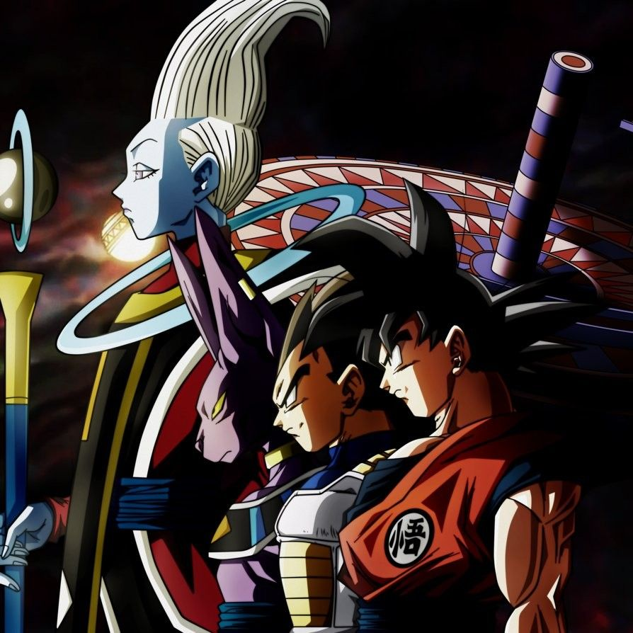

WELCOME TO THE WORLD OF DRAGON BALL
"Dragon Ball Super" is a Japanese anime series that continues the epic saga of Goku and his friends following the events of "Dragon Ball Z." Produced by Toei Animation and launched in 2015, the series explores new realms and introduces powerful new characters, including Beerus, the God of Destruction, and his attendent wish.

Goku, also known by his Saiyan name Kakarot, is the central protagonist of Akira Toriyama's "Dragon Ball" series. Sent to Earth as a baby with the mission to conquer it, a head injury caused him to lose his destructive tendencies and grow up as a kind-hearted and cheerful individual. Raised by Grandpa Gohan, Goku's life revolves around his love for martial arts and an insatiable appetite
.jpg (1).jpg)